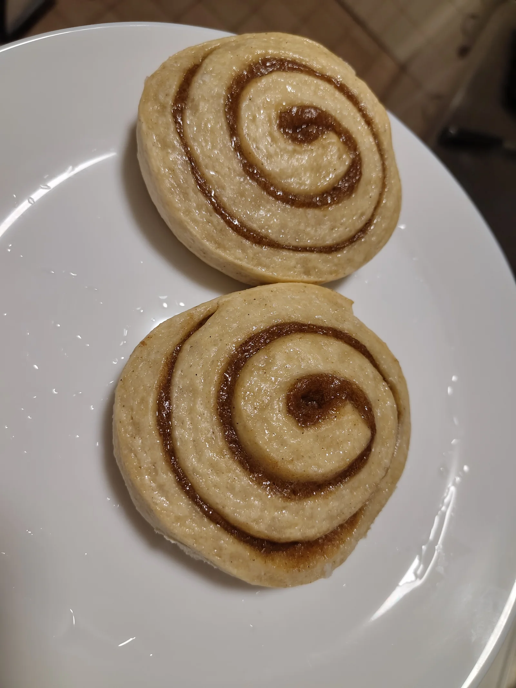
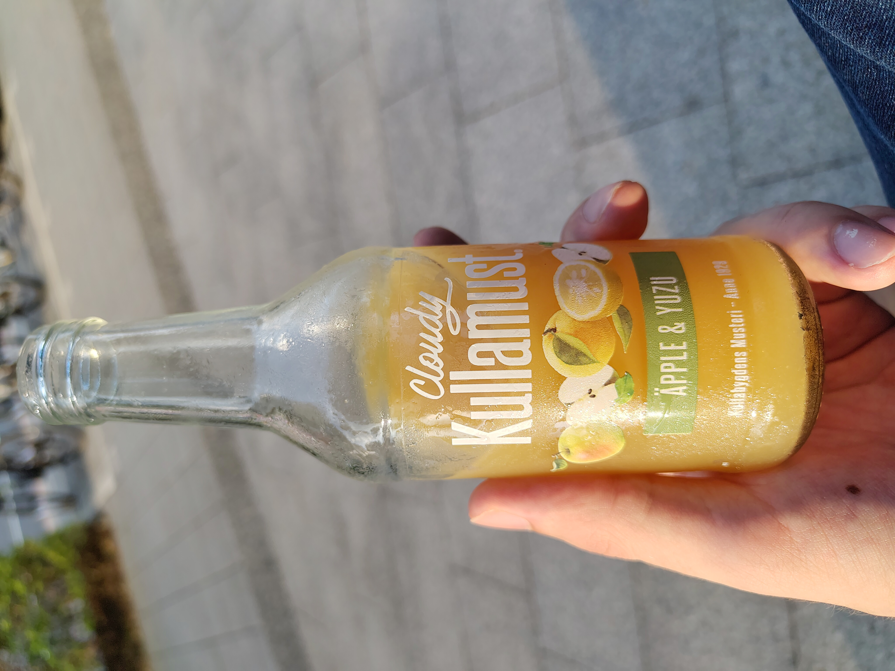

4 October 2026

Today is the Swedish Cinnamon bun day, and so in a slight repeat of 42 days ago I had another cinnamon bun, this time with a friend. There is apparently a Swedish-style bakery in Taiwan, but unfortunately in Tainan (台南) — on the opposite end from Taipei (台北). The only remaining option then was to to go to ikea and buy frozen ones that could be made in the oven since we do not have the tools needed for baking at home.
While there I also had to buy something that I know has made the same trip I have to this strange land:
